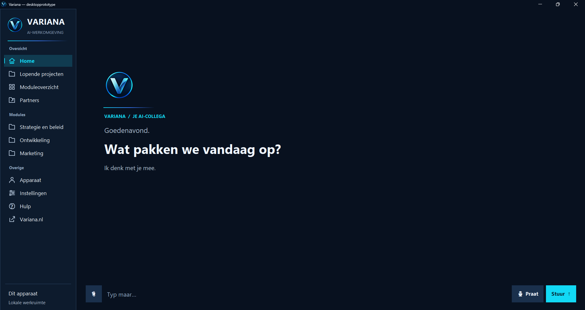
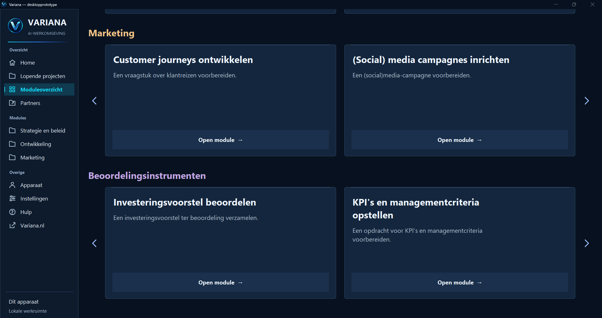

Variana als dienst
Laat je vraag uitwerken.
Nu beschikbaarLaat analyses, adviesrapporten en blauwdrukken uitvoeren, afgestemd op het besluit dat je voorbereidt.
Ontdek de dienstverleningVariana Desktop
In ontwikkelingVariana Desktop wordt ontwikkeld als een zelfstandige, downloadbare onderzoeksomgeving. Bouw straks analyses, organisatieblauwdrukken en strategische uitwerkingen op vanuit één gedeelde basis.

Vergroot het softwareschermProductdemonstratie
De prototypebeelden geven een eerste indruk van de onderzoeksomgeving. Vraag een productpreview aan om de huidige werkomgeving en de beoogde werkwijze voor jouw organisatie te bespreken.
Ontwikkelpreview · de getoonde interface wordt verder ontwikkeld.
Vraag een productpreview aanDe werkomgeving
Het desktopprototype brengt de invoer van je vraag en het overzicht van modules bij elkaar. De beelden tonen de huidige interface.
 Vergroot het softwarescherm
Vergroot het softwarescherm Het startscherm biedt een invoerveld voor je vraag en context.
De navigatie ordent de werkomgeving rond strategie en beleid, ontwikkeling en marketing.
Het moduleoverzicht toont onder meer analyses en de blauwdruk. De beoogde onderzoeksstructuur verbindt die onderdelen met de uitwerking van je vraag.

Vergroot het softwareschermFunctionaliteiten en ontwikkelstatus
De huidige prototypebeelden en de verdere ontwikkeling van de zelfstandige software hebben elk hun eigen status.
| Onderdeel | Status | Toelichting |
|---|---|---|
| Startscherm en moduleoverzicht | Zichtbaar in prototype | De interfacebeelden tonen de invoeromgeving, navigatie en ingangen naar modules. |
| Zelfstandig onderzoekswerk | In ontwikkeling | De downloadbare omgeving voor samenhangende analyses, blauwdrukken en strategische uitwerkingen wordt verder ontwikkeld. |
| Uitvoering en eindoutput | In ontwikkeling | Welke onderzoeksfuncties beschikbaar zijn, wordt per ontwikkelversie toegelicht. De getoonde schermen laten de huidige werkomgeving en module-ingangen zien. |
| Download en installatie | Nog niet beschikbaar | Er is nog geen zelfstandige download. Installatiegegevens en systeemvereisten volgen zodra ze zijn vastgesteld. |
Lokale software
De beoogde volgende stap is software die je op je eigen apparaat installeert en zelfstandig gebruikt.
Installatiebestanden, ondersteunde besturingssystemen en systeemvereisten worden bekendgemaakt zodra die zijn vastgesteld. Ook wordt dan duidelijk welke onderdelen zonder internet werken en wanneer een verbinding nodig is.
Zo kun je vóór installatie beoordelen wat past bij jouw apparaat en werkwijze.
Beschikbaarheid
In ontwikkelingEr is nog geen zelfstandige download beschikbaar. Meld je belangstelling voor een productpreview en bespreek welke toepassing je wilt verkennen.
Twee manieren om Variana in te zetten
Variana als dienst
Laat analyses, adviesrapporten en blauwdrukken uitvoeren, afgestemd op het besluit dat je voorbereidt.
Ontdek de dienstverleningVariana als software
De zelfstandige onderzoeksomgeving voor analyses, organisatieblauwdrukken en strategische uitwerkingen.
Ontdek Variana Desktop